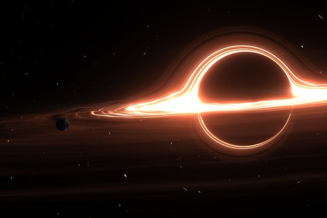

<style>
  article {
    display: flex;
    background-color: black;
    color: white;
  }
  img {
    /*
        Here when you uncomment this line it will maintain the block-size as long as the image was but if your available inline-size shrink it should just acts as if the image was not there while still maintaining same block-size.
    */
    /* visibility: collapse; */
  }
</style>

<article>
  <header>
    <h1>Black hole</h1>
  </header>
  <p>
    A black hole is a region of spacetime where gravity is so strong that
    nothing, not even light and other electromagnetic waves, is capable of
    possessing enough energy to escape it. Einstein's theory of general
    relativity predicts that a sufficiently compact mass can deform spacetime to
    form a black hole.
  </p>
  
  <p>
    The boundary of no escape is called the event horizon. A black hole has a
    great effect on the fate and circumstances of an object crossing it, but it
    has no locally detectable features according to general relativity.
  </p>
</article>
